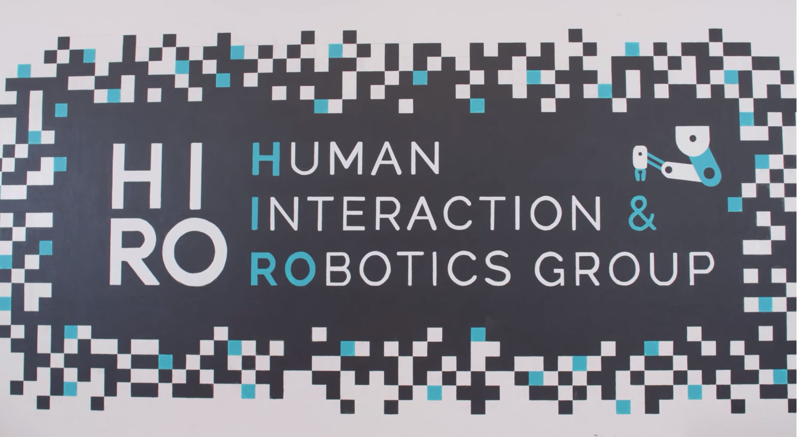
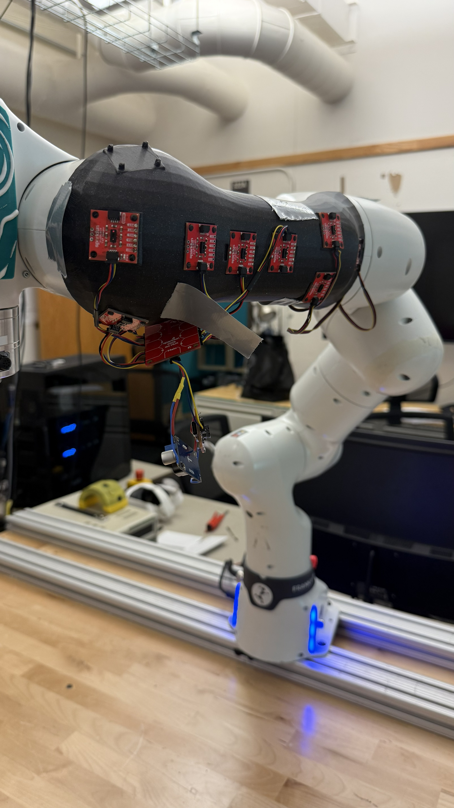
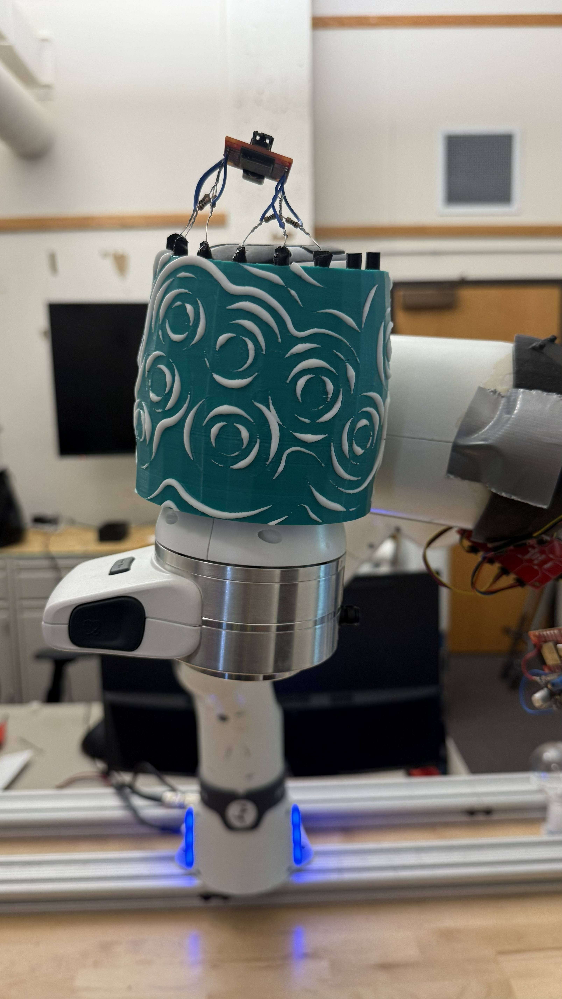
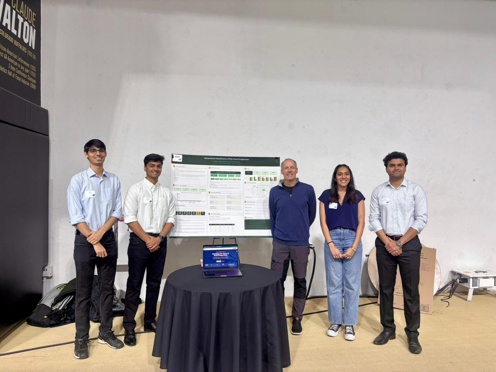
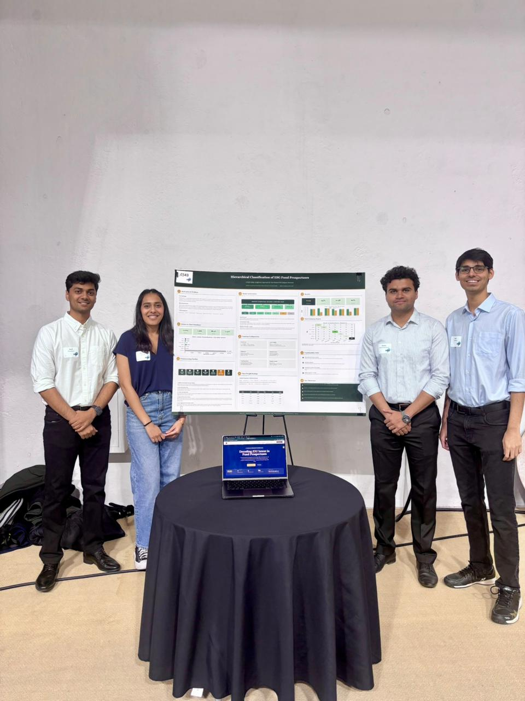
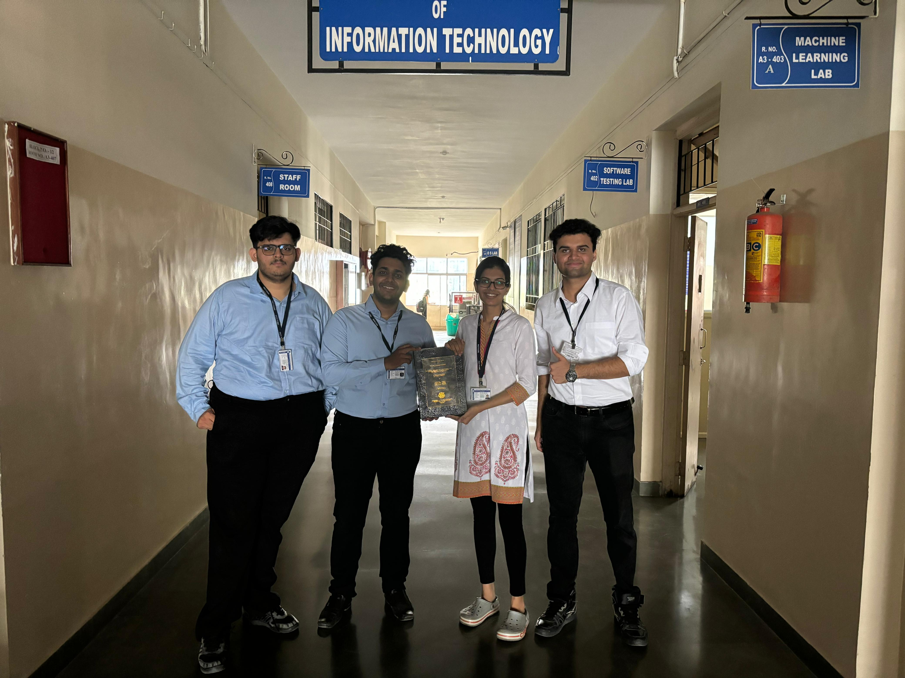

Developed multi-modal robot learning systems at CU Boulder's Human Interaction & RObotics Group, combining visual and proprioceptive inputs for high-DoF manipulation platforms. Building full-stack pipelines spanning data collection, policy training, and real-time ROS2 deployment.



High-DoF robotic manipulation at CU Boulder's HIRO Lab relied on single-modality sensory inputs, limiting policy generalization across task variations and sim-to-real transfer.
Build a full-stack multi-modal imitation learning pipeline integrating RGB vision with proprioceptive feedback for real-time manipulation policy training and deployment on physical hardware via ROS2.
Designed a teleoperation-based data collection system in ROS2, trained transformer-backed imitation and RL policies using PyTorch and Stable Baselines3, and validated in MuJoCo simulation before hardware transfer — with all experiments tracked end-to-end in Weights & Biases.
Delivered a reproducible multi-modal robot learning system with real-time ROS2 deployment, advancing the lab's embodied AI research and establishing reusable manipulation benchmarks across multiple task configurations.
Building transformer-based document classification systems for large-scale business text at CU Boulder's Leeds School of Business. Architected hierarchical RoBERTa and Longformer pipelines with custom preprocessing to handle documents far exceeding standard token limits, achieving strong F1 under heavy class imbalance.
Leeds School of Business researchers needed to classify large volumes of long-form business documents, but standard transformer models like BERT truncated content beyond 512 tokens — discarding crucial information mid-document.
Engineer a scalable NLP classification pipeline capable of processing documents far exceeding standard token limits, maintaining high F1 performance across categories with severe class imbalance.
Architected hierarchical RoBERTa and Longformer pipelines with custom chunking and sliding-window strategies, implemented class-weighted loss and oversampling to address imbalance, and fine-tuned models via HuggingFace Transformers and PyTorch on the curated business document corpus.
Produced a deployed classification system achieving strong F1 across all document categories, enabling automated large-scale text analysis and significantly accelerating the school's business analytics research pipeline.


Designed and deployed a real-time Indian Sign Language recognition system using MediaPipe keypoint extraction and LSTM sequence modeling, achieving 97% test accuracy. Optimized the inference pipeline for a 20% speed improvement and published findings at an international Springer conference.

India's ~18 million hearing-impaired citizens lacked access to a real-time, low-cost Indian Sign Language recognition tool — existing academic systems required expensive depth sensors or massive annotated datasets.
Design, train, and deploy a real-time ISL recognition system operable on standard webcam hardware, targeting research-grade accuracy across 50+ gestures and suitable for international publication.
Extracted hand and body keypoints via MediaPipe, trained LSTM sequence models on keypoint time-series, and optimized the inference pipeline through lightweight post-processing and quantization — reducing latency without sacrificing accuracy.
Achieved 97% test accuracy with a 20% improvement in inference speed, publishing findings in international Springer conference proceedings and delivering a deployable real-time ISL recognition tool accessible without specialized hardware.